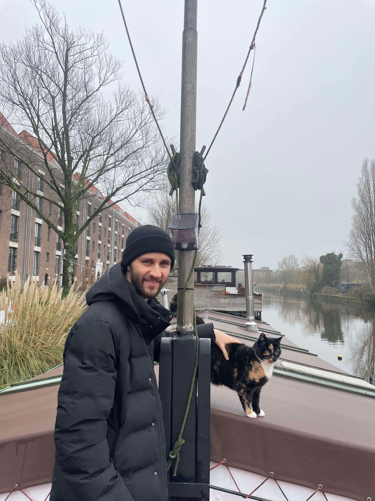
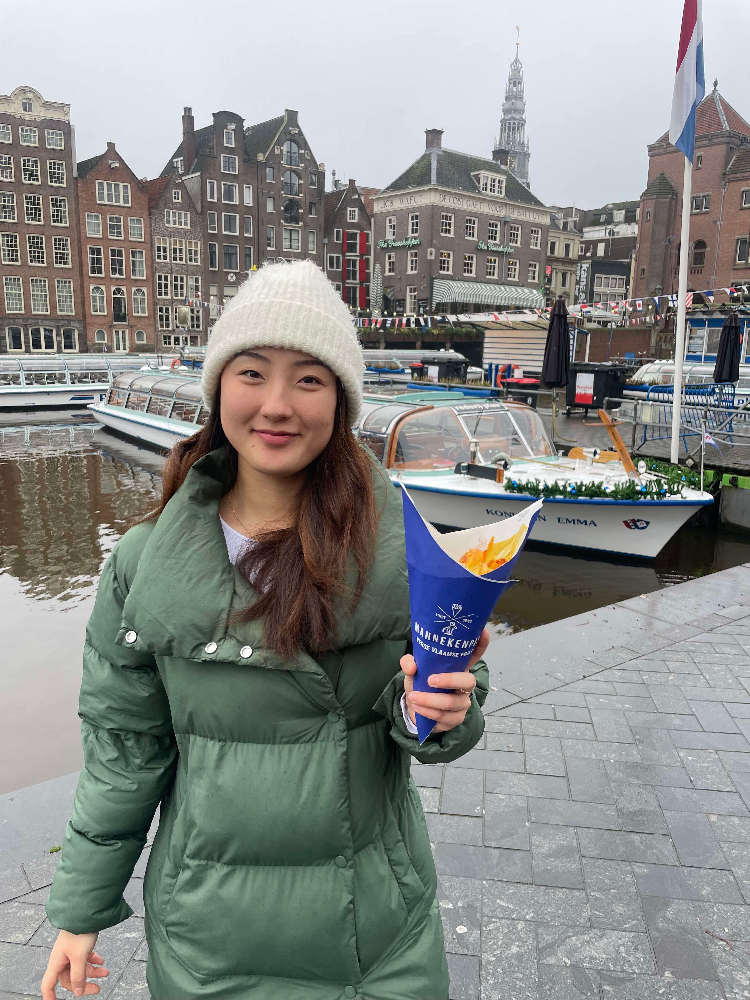
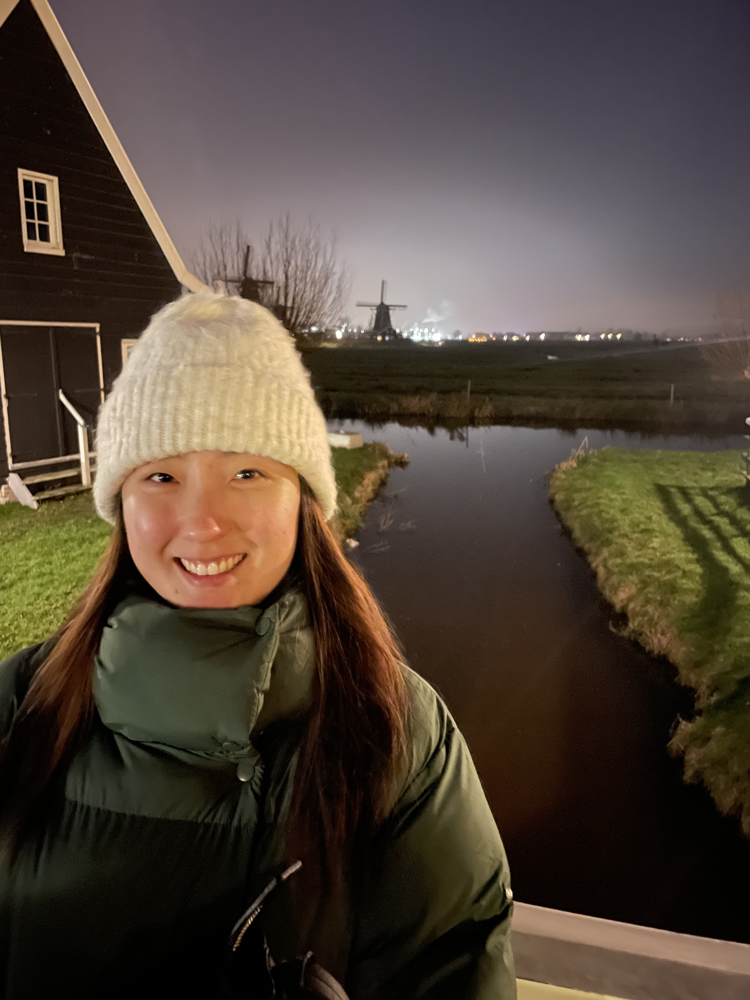

← Travel
Amsterdam 2024
In the lead up to our trip we had booked an AirBnB near Gatwick airport, anticipating that it would be nearly impossible to take public transport to the Aiport on Christmas Day. When we checked in the day before our flight we realised that we were instead flying out of Luton airport! It was too late to change our AirBnB but luckily we found a National Express bus leaving from Finchley Road to take us to Luton.

25th December 2024
Schiphol Ap looked just as it was when I worked there last year! We took the Sprinter train into Amsterdam Centraal and chowed on Italian food! We followed a Rick Steves walk through the main streets of Amsterdam, taking us to Kalverstraat, a busy street lined with fashion stores, to hidden churches, used when Catholics were outlawed in Amsterdam, and finally to a Begijnhof, a haven for single women in Amsterdam.
We tried to get into the Anne Frank Museum, but showed up when it was closed (long story). At night we bought a space cake and walked through the Amsterdam light festival. Back at the house boat we chowed down on some biscuits before knocking out for the night.

26th December 2024
In the morning we tried the Sherlocked escape room where we were split in two rooms commmunicating through a phone. Unfortunately we needed almost half an hour of extra time to finish the room! We took to the roads on bicycles before lunch, making our way to Vondelpark, then up to Westerkerk to to ride past a windmill on the side of a main road! We stopped off for some Bitterballen and apple pie at a cosy Amsterdam pub.
We emerged from our house boat at night to join a canal cruise. We learnt that hundreds of bodies are fished from the canal each year, apparently a large number coming from drunk tourists stumbling into the canal! Finally, we took ourselves through the Red Light District, although the crowds were immense!

27th December 2024
Our final day started with Toney's Chocoloneys, which we abandoned because of the massive line! We took a train to Zaandam with famous colourful apartment blocks rising above us and historically preserved windmills which we could only partially see spotted around the fields as night fell.
Our flight had been delayed from 9pm to 1am so we dined on Amsterdam croquettes and almost tried the famous Winkel 43 apple pie. Just as we were about to be let in our flight was pushed up and we had to leave. After a sketchy flight back to London in heavy fog, we walked home at 2am in the morning to conclude our Amsterdam adventure.